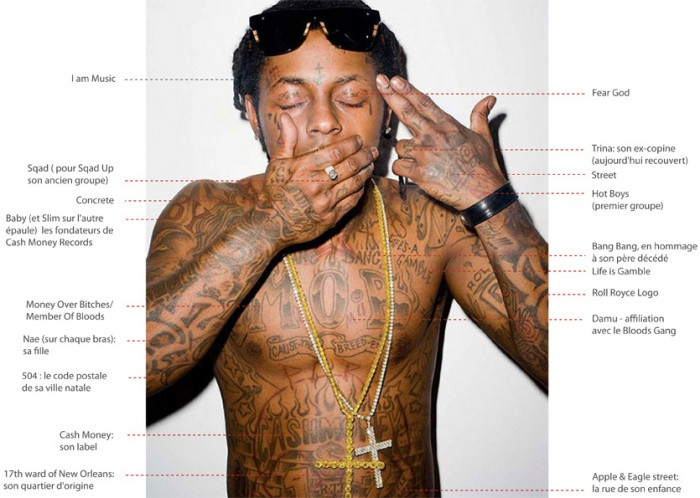

- Votre panier est vide.
- Cart - 0 €
La tournée française de Lil Wayne commence ce samedi 12 octobre au Zénith de Toulouse et finira à Bercy le mercredi 16 Octobre. Une occasion pour Derm-ink de revenir sur les tatouages d’un des rappeurs les plus encrés de la scène Hip Hop américaine.
photo: Tha Lil Wayne. com
Difficile de ne pas voir que Lil Wayne entretien une relation soutenue avec les tatoueurs. Chaque événement est une occasion pour couvrir davantage ce qui lui reste d’espace de peau disponible. Son corps est recouvert d’une véritable fresque typographique, qui s’apparente à son autobiographie. Les groupes dont il a fait partie, la rue dans la quelle il a grandit, la femme qu’il a aimé, les titres de ses chansons et même sa chaîne de sport préféré, le corps de Lil Wayne est couvert d’une accumulation de tatouages évoquant tout ce qui a participé à construire la vie bien remplie de ce rappeur d’exception.
Son premier tatouage, Lil Wayne le fait à 14 ans après la mort de son père. Il sait à ce moment là qu’il en fera beaucoup d’autres, et comme tous les ados, Lil Wayne veut ressembler à son héro. Cela passe par se faire tatouer des étoiles sur le ventre à la manière de Tupac.
Souvent tatoué dans l’instant, 4 larmes tatouées sur son visage feront polémique. Pour beaucoup, elles représentaient il y a quelques temps le nombre de personnes qu’il aurait tué… ou perdu… Lil Wayne avoua simplement avoir voulu se faire tatouer une larme, qui une fois encrée, lui avait donné envie d’en ajouter d’autres.
Un brin mégalo (ou sûr de lui) il se tatoue I am Music sur le front, Weezy (son surnom) sur le cou, ou sa date de naissance sur la longeur de son avant bras. En bon matérialiste, il est fier de s’être gravé à jamais le logo de sa chaine de sport favorite ESPN, le logo Rolls Royce sur le bras, ou encore Shake Junt avec un petit skateboard sur le poignet, en bon fan de skateboard qu’il est.
N’oublions pas que Lil Wayne est avant tout un bad boy, et se fait tatouer son appartenance au Bloods Gang en rouge sur le torse. Il est aussi un homme richissime, de pouvoir, et aime le revendiquer. A Gun et The World sont tatoués sur ses paumes, comme pour dire qu’ils les tient dans ses mains.
Les tattoos de Lil Wayne ne sont motivés par aucun esthétisme graphique particulier (l’esprit Lo-Fi est pourtant bien là) mais plutôt par un besoin de s’exprimer et de marquer sa peau sans cesse. Il avoue être attiré par l’idée de choquer et déranger les gens dans leur conservatisme.
Tous les tattoos de Lil Wayne : Lil Wayne HQ
Photos: http://www.lilwaynehq.com/tattoos/
Mots-clés : lil wayne, tatouages, tattoos“Les soins derm-ink ne sont pas gras, et ne tâchent pas les t-shirts... ce sont d’après-moi les points forts des produits”
> Aurel (83) ****
__________________
“ Très agréablement surprise Cicatrisation rapide et sans problèmes ++++”
> Lea (78) ****
__________________
"Commande reçue très rapidement et MERCI pour les stickers!! Pour l'instant j'adore les soins ;) !"
> Stella (14) ****
{kind=link}
{kind=link}
{kind=link}
{kind=link}